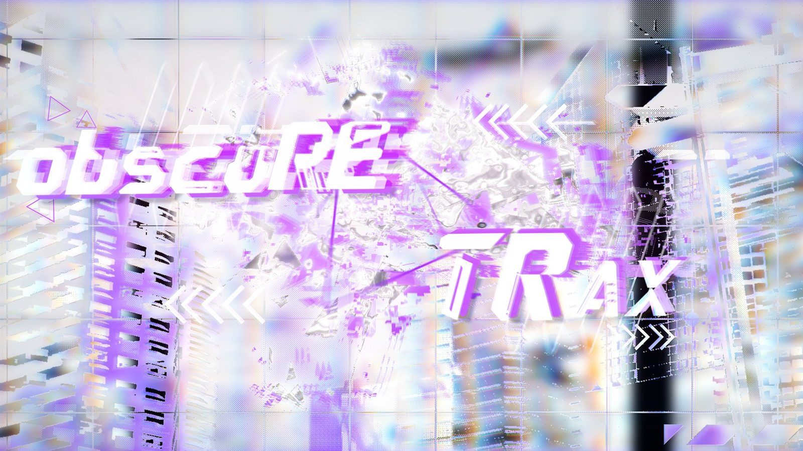
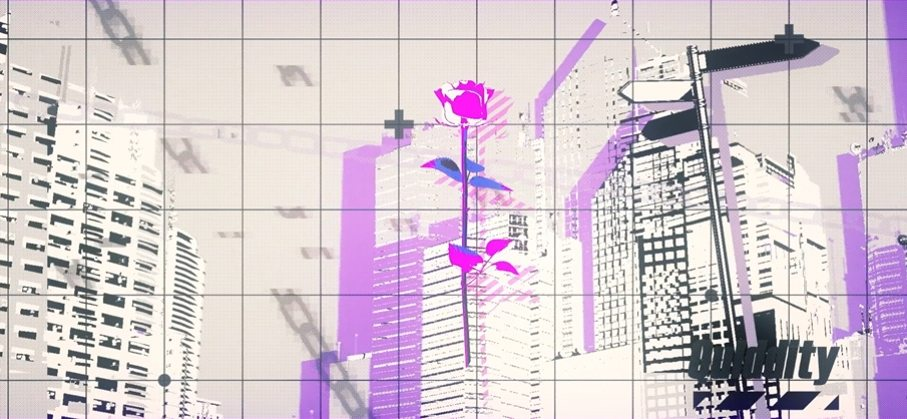

作品审核
以作品自身的表达为出发点，不以风格整齐作为唯一判断尺度。
RELEASEINDEPENDENT LABEL · EST. 2024.06.22
无意整饬，参差错落间，寻绎丰饶的韵致。
模糊框架成立于 2024 年 06 月 22 日，并于 2024 年 09 月 14 日建立 Dizzylab 账号。我们拒斥被统一性限制的规训，在混沌的褶皱处开凿意义的富矿。
01 / MANIFESTO
无意整饬，参差错落间，
寻绎丰饶的韵致。
拒斥限制，混沌褶皱处，开凿意义的富矿。
02 / SELECTED RELEASES
来自模糊框架的发行与视觉作品。具体作品资料将在后续补充。
03 / OPERATORS
负责模糊框架审核、发行、编曲与视觉工作的现任运营成员。
04 / LABEL PRACTICE
拒绝单一风格的规训，在审核、发行、编曲与平面视觉之间持续构建。
以作品自身的表达为出发点，不以风格整齐作为唯一判断尺度。
RELEASE统筹厂牌作品的资料、发布节奏与 Dizzylab 页面管理。
MANAGEMENT拒绝枷锁，自由地将脑海中的结构、噪点与旋律转化为作品。
ARRANGEMENT通过故障、拼贴、网点与高饱和色彩形成厂牌的视觉语言。
GRAPHIC05 / VISUAL ARCHIVE
以平面设计记录厂牌的视觉切片：网格、故障、城市、噪点与紫色光谱。


06 / CONTACT & LINK
发行咨询、作品沟通与其他厂牌事务，请联系现任主理或副主理。